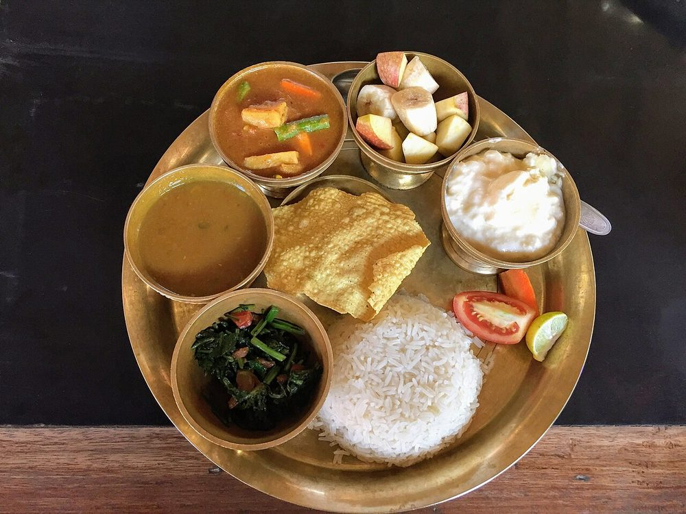

Gundruk ko Jhol
sour Sikkimese greens broth, thin and hot, drunk alongside a plate of rice

Contains: mustard
Ingredients
Quantities for 4.
- 200g, chopped Mustard Greensgundruk (dried fermented leaf) has no catalogue id; fresh mustard greens plus the vinegar below get you the closest available approximation of its sourness
- 2 tsp Vinegarreplaces the sourness the fermentation would have supplied; add it at the end, off the boil
- 2 medium, cut into 1cm dice Potato
- 2, chopped Tomato
- 6 cloves, crushed Garlic
- 1 tbsp, chopped Ginger
- 1 small, chopped Onion
- 1/2 tsp Turmeric
- 1/4 tsp Fenugreek Seedsthe bitter note that marks out a Sikkimese jhol; a scant quarter teaspoon, no more
- 3, broken Dried Red Chilli
- 2 tbsp Mustard Oil
- 1 litre Water
- to taste Salt
Cookware
stovetop
Checked against the ingredient list for ten allergens: milk, egg, fish, crustaceans, tree nuts, peanuts, sesame, mustard, soy and gluten. Brands vary, so read the label on anything new to you.
Before you start
- Wash the greens in two changes of water and shake them dry. Wet leaves steam rather than fry.
- Measure the fenugreek carefully. A heaped spoon turns the whole pot bitter and cannot be fixed.
- This is a broth to drink, not a curry. Keep it thin.
Method
- Heat the mustard oil until it smokes, then take it off the heat for 30 seconds.
- Add the fenugreek seeds and dried chillies and fry for 15 seconds only, until the seeds turn one shade darker.Fenugreek burns fast and goes acrid. Count the seconds out loud.
- Add the onion, garlic and ginger and cook 3 minutes until the onion is translucent.
- Stir in the chopped greens and cook 4 minutes, pressing them down, until they have wilted right down and turned dark.
- Add the tomato and turmeric and cook 3 minutes until the tomato has slumped.
- Add the potato and the water, bring to a boil, then simmer uncovered 12 minutes until the potato is soft enough to crush against the side.
- Crush 3 or 4 pieces of potato into the broth to give it the faintest body, and season with salt.Just a few pieces. Any more and it becomes soup rather than jhol.
- Take the pan off the heat, stir in the vinegar, and stand 2 minutes before ladling out.Vinegar boiled in tastes flat; added off the heat it stays bright.
Storage
Keeps 3 days refrigerated and the sourness settles nicely. Reheat to a bare simmer and add a few drops more vinegar before serving to wake it back up.
Nutrition Medium estimate
Low protein: 4 g a serving, 10% of the calories
| Per serving420 g | Per 100 g | |
|---|---|---|
| Calories | 171 kcal | 41 kcal |
| Protein | 4.4 g | 1 g |
| Carbohydrate | 23.8 g | 6 g |
| of which sugars | 3.8 g | 1 g |
| Fibre | 4.7 g | 1 g |
| Fat | 7.5 g | 2 g |
| of which saturated | 0.9 g | 0 g |
| of which unsaturated | 5.8 g | 1 g |
Ingredients given to taste count as zero, so the real figures run a little higher. Estimated from raw ingredients using USDA FoodData Central.
More like this: Healthy Indian recipes · Vegan Indian recipes · Vegetarian Indian recipes · Gluten-free Indian recipes · Dairy-free Indian recipes · Indian soup recipes · Northeast Indian recipes
Times, yields, allergens and nutrition are guidance. Use your own judgement on doneness and on storing. More in About.